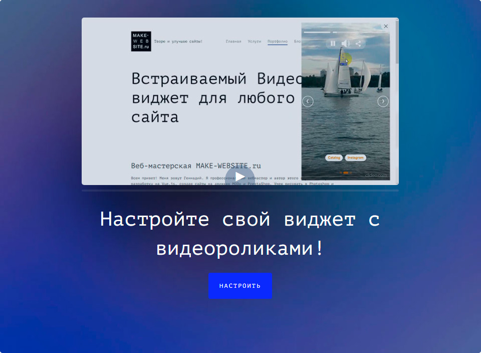
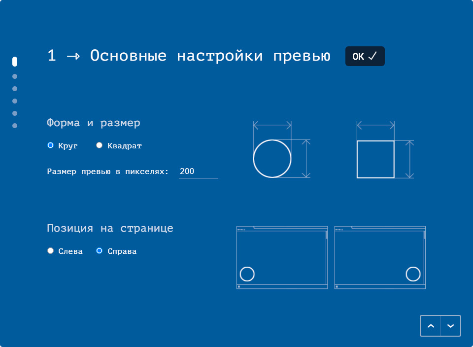
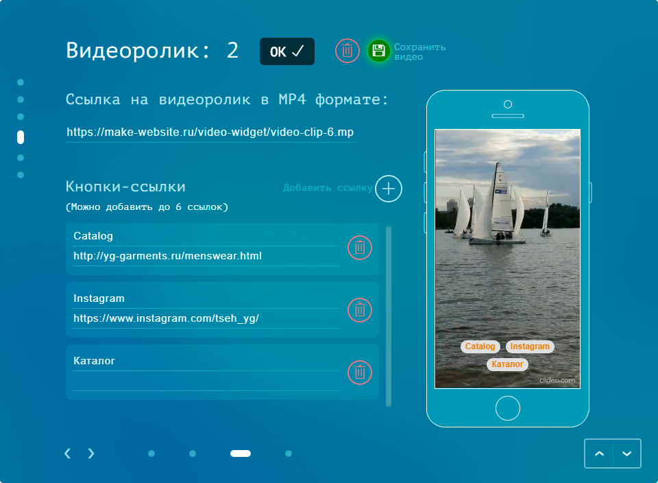
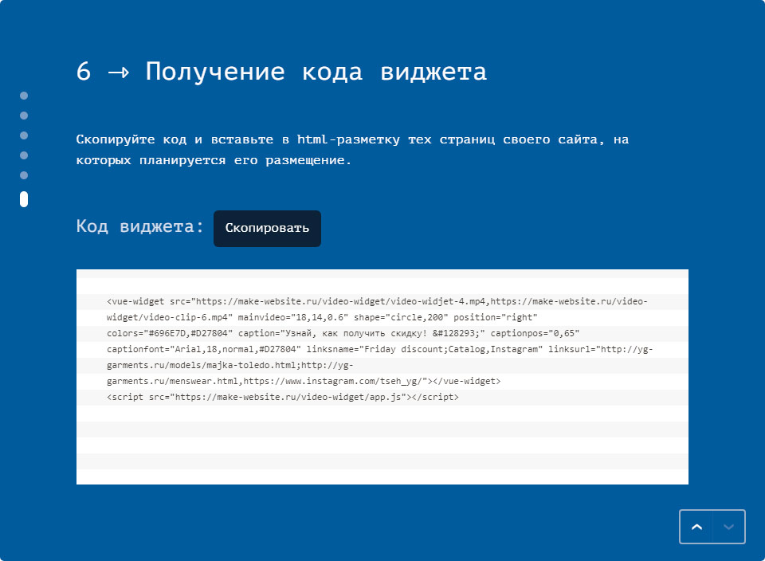
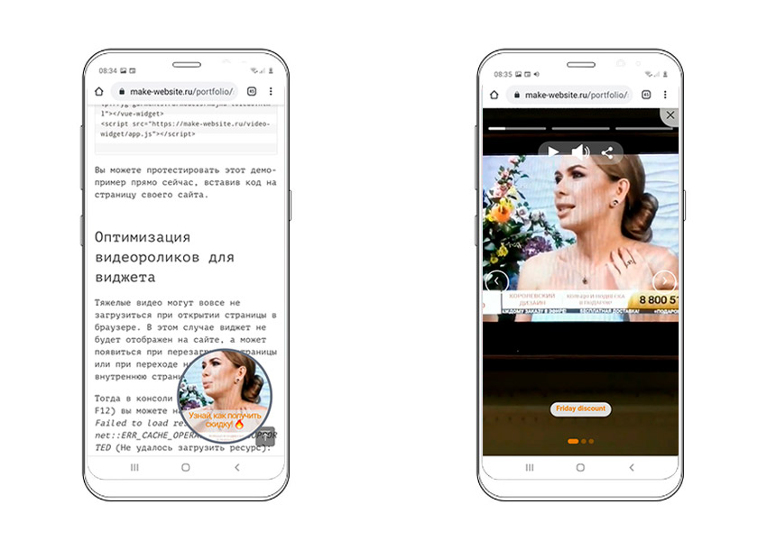

Встраиваемый Vue.js виджет «Видео-приветствие»
Этот виджет можно использовать как дополнительный маркетинговый инструмент на любом сайте. Чтобы посмотреть ролики просто кликните на окно-превью (справа внизу экрана).
Устанавливается виджет посредством вставки кода на страницу. Для формирования кода понадобится предварительная настройка виджета. В конфигураторе можно добавить свои видеоролики (до 8 клипов), выполнить настройку внешнего вида виджета:
- форма (круг/квадрат),
- позиция (слева/спрва),
- размер превью-окна,
- цвет рамки,
- шрифт, его размер, насыщенность и цвет.
К каждому видео есть возможность добавить кнопки-ссылки на целевые веб-страницы и страницы соцсетей.
Основное (первое) видео рекомендуется сделать вертикального формата для оптимального отображения виджета и на компьютерах, и на смартфонах. Последующие ролики будут адаптированы по ширине основного. В демо примере ролики сняты на телефоне Самсунг.
В настройках есть возможность отпозиционировать и изменить масштаб основного видео в превью-окне виджета, а также наложить надпись-заголовок и определить его местоположение в пределах превью-блока.
Окно просмотра видеороликов открывается по клику на превью на высоту экрана с отступами на компьютере и без отступов на телефоне. Оно снабжено прогресс-баром и кнопками: Закрыть, Воспроизведение/Пауза, Отключение звука, навигационные кнопки (если роликов больше 1), а также Поделиться в соцсетях или мессенджерах.
Пример конечного кода
<vue-widget src="https://make-website.ru/video-widget/video-widjet-4.mp4" mainvideo="18,14,0.6" shape="circle,200" position="right" colors="#696E7D,#D27804" caption="Узнай, как получить скидку! 🔥" captionpos="0,65" captionfont="Arial,18,normal,#D27804" linksname="Friday discount" linksurl="http://yg-garments.ru/models/majka-toledo.html"></vue-widget>
<script src="https://make-website.ru/video-widget/app.js"></script>
Вы можете протестировать этот демо-пример прямо сейчас, вставив код на страницу своего сайта.
Использованные технологии и плагины:
- Html5 Video (работа с событиями в медиа объектах video)
- Canvas (получение скриншота видео для вставки на фон)
- Web Share API (для возможности поделиться страницей на смартфонах)
- Vue-custom-element (обертка компонентов Vue для использования в HTML)
- Goodshare.js (кнопки Поделиться)
Ссылки
Адрес проекта: Видео-виджет и Конфигуратор
Скриншоты и видео-обзор





Видео-обзор